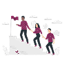
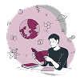

Nossas Principais Ações
1 Conexão entre pessoas e causas
Unimos voluntários, doadores e ONGs em uma plataforma colaborativa, facilitando o encontro entre quem quer ajudar e quem precisa de apoio.
2 Transparência nas Doações
Fornecemos relatórios claros sobre o uso dos recursos para garantir confiança e responsabilidade.

3 Fortalecimento das ONGs
Oferecemos recursos que ajudam as ONGs a organizarem suas atividades, ampliarem seu alcance e aumentarem o impacto de suas causas.
4 Capacitação e Reconhecimento
Valorizamos os voluntários com certificados e conteúdos que incentivam seu crescimento e engajamento contínuo
